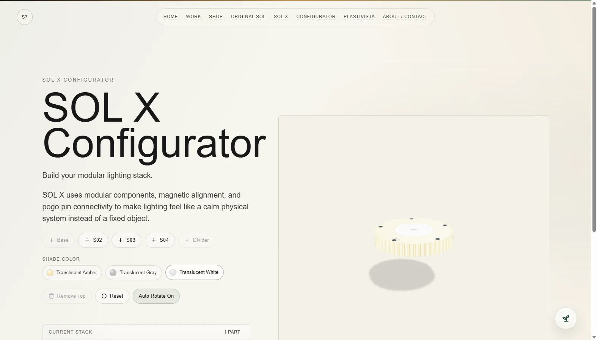
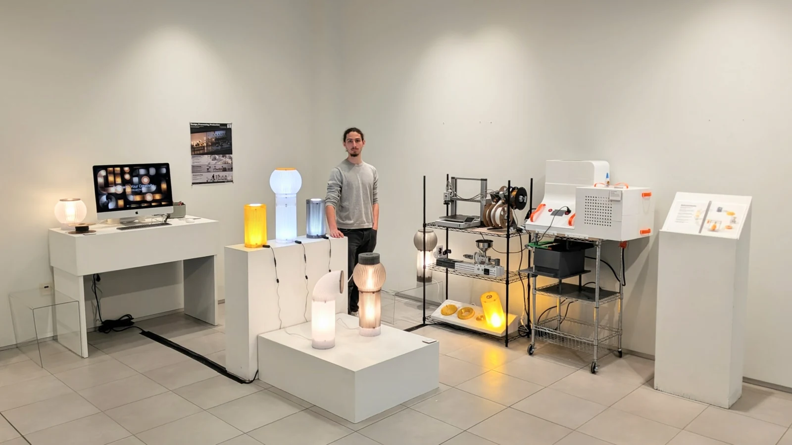
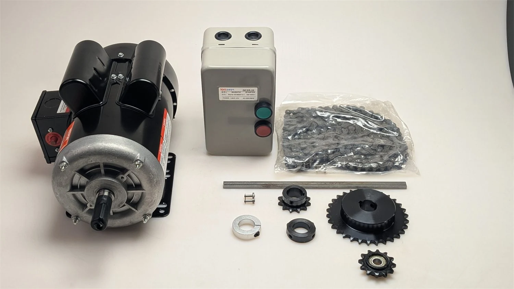
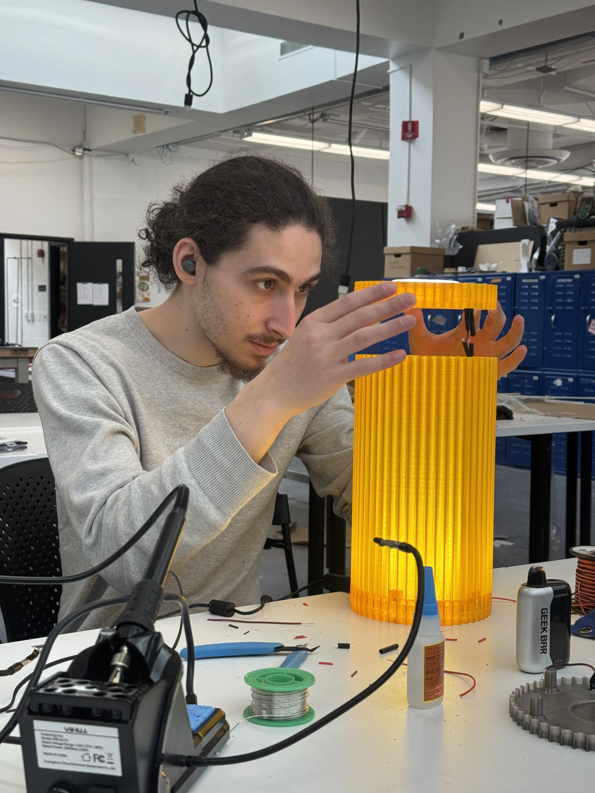
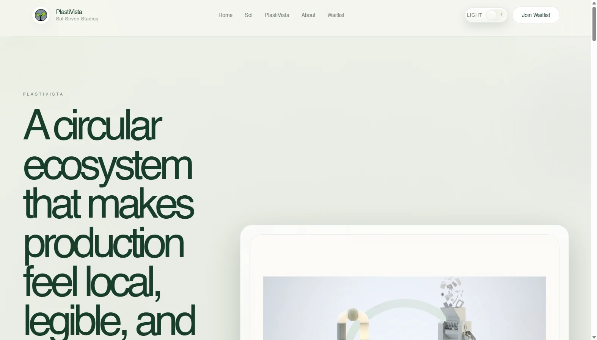

Open prototype ↗Sol Seven Studios
A storefront and configurator for exploring combinations of lamp bases, shades and dividers.
I’m building a circular system that connects local plastic recovery, manufacturing and product design, giving waste a second life as lasting products.

I set up separate PLA and PETG collection bins at the RIT Fab Lab to recover failed prints and support material where they were being made. Keeping the plastics separate gave me a more controlled starting point for processing.
View the collection setupThe shredder breaks the waste into flakes. I added a second grinding step to reduce particle size before feeding the extruder.
I assembled the enclosure from more than 45 printed panels to fit the available printer. Removable panels provide access to the motor, cutting mechanism and controls.

A 1 hp motor drives the cutting mechanism through a gear reducer. An Arduino Uno and Nextion touchscreen provide the operating interface, including jam clearing profiles.
The assembly includes a magnetic starter and a dedicated shutoff switch. Removable magnetic panels give access to the components.
View the touchscreenI adapted an existing compact extrusion design for shredded plastic, combining purchased hardware with printed parts. I assembled the drivetrain and heating system, then integrated the wiring and controls.
Producing usable filament meant balancing three variables as the material moved through the machine.
On April 11, 2026, I completed the first successful print made entirely from the recovered filament: a small chair test. The material came from Fab Lab waste and discarded student prints.
Making the filament diameter consistent over longer runs is the next development goal.
Sol Seven Studios is the product design side of this circular system. I developed a modular lighting line built around interchangeable bases, shades and dividers. A shared magnetic interface lets the same parts form different arrangements.
Sol X extends the idea with pogo pin contacts that pass power between modules from a single base.
I tested a press fit, a slot and twist connection, and a three magnet arrangement before moving to five magnets. The change improved alignment and made the interface more repeatable.
Sol X adds electrical contacts to the shared connection, reducing the number of power cords needed for a stack.

I also built interfaces for exploring the products and explaining the proposed manufacturing service.

Open prototype ↗A storefront and configurator for exploring combinations of lamp bases, shades and dividers.

Open prototype ↗A public introduction to the material system, with a waitlist for potential participants.
The next phase is to develop standardized collection, sorting and processing for plastic waste from local businesses, validate material consistency and continue developing the lighting line. The larger ambition is local infrastructure that connects a reliable supply of recovered plastic with a product design studio, supporting an ongoing cycle of material recovery and new products.
Open the full technical record